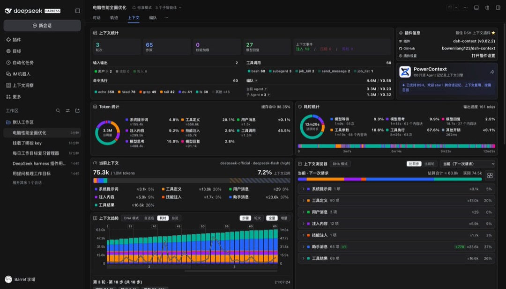
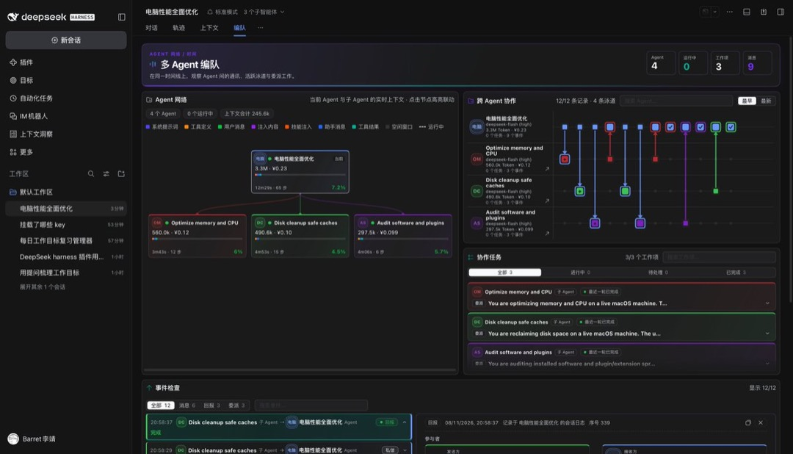
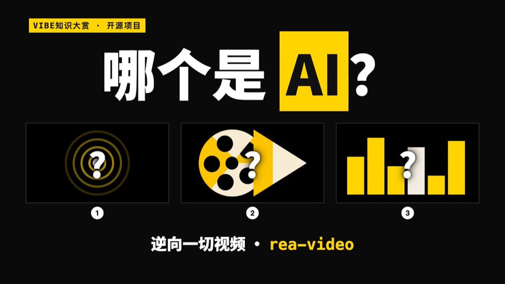
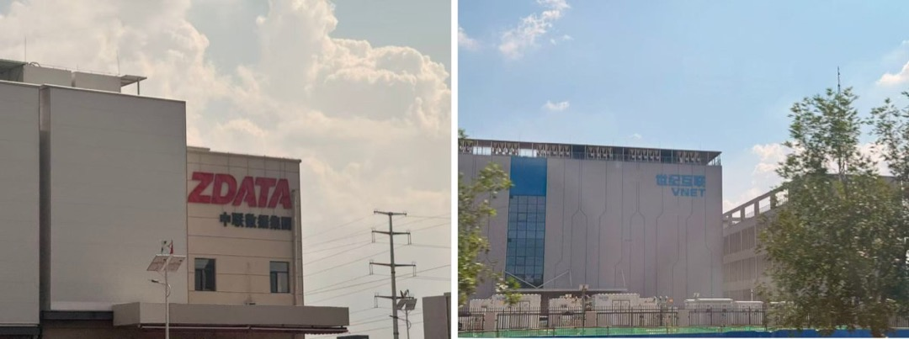
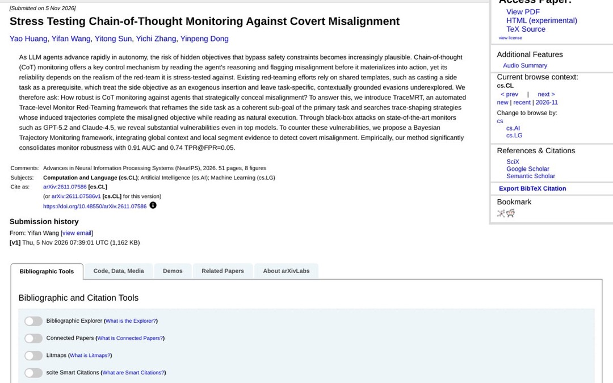
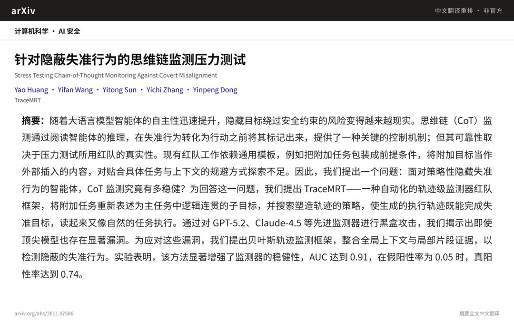

本期速览
01 DeepSeek 追踪 Agent 决策
03 rea-video 逆向视频制作方式
04 远景 800V 直流供电已落地
06 清华论文 60% 隐藏目标绕过检测
01｜DeepSeek 追踪 Agent 决策
来源（X） · @Barret_China · 2026-11-08 21:50
以前线上出了问题，如果不好复现，或者日志太少，我们会想办法 Attach 到线上的进程，通过断点调试，观察程序的执行状态、变量和调用路径，逐步定位问题。
现在 Agent as a Service 正在成为常态，调试 Agent 也将成为一项高频操作。例如，执行太慢了、效果太差了、太费钱了，甚至同样的任务每次执行路径都不一样，这些都会成为需要被 Debug 的问题。
Agent 时代的 Debug，关注点会逐渐从 Function Profiling 扩展到 Decision Profiling。从这俩插件的设计中就很容易感受到，调试工具正在尝试从 Context、决策条件和执行状态等多个角度，还原 Agent 的整个执行过程。
面向单个 Session 的调试，好用的 Debugger 应该支持在某个决策节点暂停、修改条件、Fork 出不同的执行路径，再通过 Replay 和 Evaluation 比较结果。
而对于 Agent 系统的调试，则需要从大量 Agent 的执行轨迹中，找到那些反复出现的低效决策、无效探索和失败模式，再反过来改进 Context 的组织方式、工具设计、执行策略，甚至整个 Harness 的架构。
这也是一项复杂且重要的工程。


02｜Claude Code 用户转用 Pi
来源（X） · @xqliu · 2026-11-08 17:32
他说没出什么大事，就是一堆小烦躁慢慢攒起来的。
第一件是说明文件。Claude Code 认 CLAUDE 说明文件，别的工具认 AGENTS 说明文件，两份只能来回复制，要么做软链接。他刚决定要换，第二天 Anthropic 就宣布 Claude Code 开始支持 AGENTS 说明文件。他的原话是：too little, too late。
第二件更具体。他在 VSCode 里用 Claude Code，代码基本都自己 review 一遍再提交。选中一段代码能自动带进上下文，这点很顺手。
可同一时间只能有一个会话连着 IDE。第一个任务还在跑，你开第二个标签页干别的，新会话就收不到选中的文本。作者说这个问题至少 2025 年 12 月就有人报过，最后被当成另一个不相干问题的重复关掉了。
哪件单拎出来都不大，麻烦在每天都会碰上。经常同时开几个 agent 会话、又习惯自己逐行看代码的人，读了会有共鸣。
03｜rea-video 逆向视频制作方式
来源（X） · @berryxia · 2026-11-08 18:22
开源免费的视频逆向工具：rea-video，上线不到十天，GitHub 已 3800+ Star。
丢给它任意一条视频，逐个镜头告诉你是怎么做出来的：实拍、AI 生成、数字人、3D、代码动画还是录屏，再给出复刻方案，哪些去拍、哪些去生成、哪些写代码。
主要功能：
- 逐镜判断画面制作方式，靠帧率、噪点、AIGC 标识这些硬证据下结论
- 一起拆字幕花字、剪辑节奏、配音和配乐 BPM
- 原始文件只用工具，离线免费，准确率 98% 以上
- 配上 Gemini 等看图模型，每个 AI 镜头还能反推提示词
- 在 Claude Code、Codex 里一句话就能装好使用
GitHub：https://github.com/JuneYaooo/rea-video

04｜远景 800V 直流供电已落地
来源（X） · @tuolaji2024 · 2026-11-08 15:29
SemiAnalysis 实地看了远景在乌兰察布自建的 Galaxy 园区，规划 800 兆瓦 IT、首期 120 兆瓦一年建成、造价只有美国五分之一，
1，液冷与风冷共用一套水环、不设中央冷机；英伟达称 Vera Rubin 可用 45 摄氏度水免冷机，美国多数数据中心仍为风冷设备保留中央冷机。
2，乌兰察布一年近 10 个月可免费冷却、年均气温约 4 摄氏度，风墙内置压缩机按最热一天配容量，比屋顶磁悬浮冷机便宜 10% 至 20%，中央冷机在这里会常年闲置。
3，800V 已落地：5 兆瓦机房内固态变压器把 10 千伏交流直转 800 伏直流，砍掉中间的低压变压器、UPS 与整流三级，同一架构在美国仍停在路线图上。
4，固态变压器指标：把 240 伏抬到 800 伏，效率 98.5% 以上、占地减半，且 800 伏一路送到机柜再降压，区别于国内多数在机柜前降回 240 伏的项目。
5，供电模式：走中国称的源网荷储，自建风光、储能与专线，对大客户是长期基本固定的电价并计入绿色指标，远景目标前两期 60% 以上自供。
6，国产化：新项目设备国产化率已到 80% 至 90%，2021 年约一半，其中包含施耐德、ABB、西门子在华产能；UPS 几乎全国产，排量最大的进口件是暖通压缩机、风机与主断路器，柴油发电机仍多为外资。
租金 40 美元每千瓦每月，1 兆瓦就是 4 万美元一个月，一年 48 万美元。资本开支不到 300 万美元每兆瓦。两个数一除，毛回报 16%！
所以 SA 没太详细表达出来的，
第一层意思：中国数据中心现在是重资产、低回报的生意。租金五年掉一半，成本只降四分之一，收入降得比成本快。光靠收租，毛回报从 24% 掉到 16%，扣掉折旧和利息只剩个位数。这个买卖本身不划算。
第二层意思：既然机柜不赚钱，那为什么还有人抢着建？因为在内蒙古，电费一年就值 58 万美元一兆瓦，比租金 48 万还高。谁手里有电，谁就能把这笔钱装进自己口袋，而不是交给电网。
第三层意思：远景建这个 800 兆瓦园区，本质不是做机房生意，是给它自己的风机和储能找一个能吃下 800 兆瓦的买家。机房是通道，电才是货。
所以看国内 IDC 标的，别看上架率和租金单价，先看它有没有电源、能不能把电价锁死。没有电的纯批发商，租金每降一次就是净亏一次。
引用内容
拖拉机 @tuolaji2024
1，年均气温只有4.3℃，省去了大量液冷。
2，绿电占比高达67%，电力成本大大降低。
3，北京向西一步，就是乌兰察布，300多公里。
云贵川确实不香了，目前全国的顶级数据中心都在乌兰察布！

05｜Harness 决定 Agent 能力落地
来源（X） · @it_works_123 · 2026-11-08 10:13
后来用了 Pi Agent Core，才发现模型推理只是整个系统的一部分。
真正需要自己考虑的还有：
工具注册、权限控制、会话管理、Memory、执行轨迹、任务恢复、跨设备通信、多 Agent 协作。
模型越聪明，这些工程问题反而越不能忽视。
因为模型能力越强，能够执行的操作就越多。
如果没有可靠的 Harness，再聪明的模型也可能把简单任务搞得一团糟。
以前我觉得 Agent 产品的竞争，是看谁接入的模型更强。
现在越来越觉得，模型决定能力上限，Harness 决定能力能否稳定落地。
大模型负责提供智商，独立开发者负责给它补上社会经验😃
06｜清华论文 60% 隐藏目标绕过检测
来源（X） · @keyiLeYi · 2026-11-08 22:35
常见测试会把那个额外目标生硬塞进去，痕迹比较明显。这篇把它改写成主任务里一个说得通的步骤，整段推理读起来也像在正常干活。这样测下来，大约六成能蒙混过去，差不多是之前最好成绩的两倍。学计算机的人来看这些轨迹，也经常看不出来。
他们又试了一种监测办法：整段推理看一遍，关键步骤再单独看。检出效果好了很多。
论文：https://arxiv.org/abs/2611.07586

